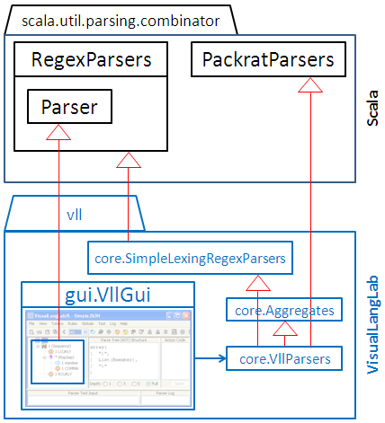

Figure-2. Node names in a grammar-tree
The class diagram in Figure-1 below is an abstraction of VisualLangLab's relationship with Scala's
parser combinators.
The GUI owns an instance of vll.core.VllParsers, which indirectly extends
RegexParsers with
PackratParsers.
The grammar-trees effectively become members of that instance
(of VllParsers) as though defined as follows:
lazy val someParser: scala.util.parsing.combinator.Parser[Any] = ...However, because of the way Scala's parser combinators work, it is not necessary to generate or compile any code to obtain this effect.
In terms of the Essential Jargon,
the GUI is a parser, while objects like someParser are parser-rules that
bring grammar-trees to life. The line of Scala code above shows that
someParser is of type
Parser
which of course is different from the idea of parser in the Essential Jargon.
In the rest of this document we will use Parser (with an
initial capital) consistently to mean Scala's
Parser,
not the Essential Jargon's parser.

Figure-1. Class diagram relating VisualLangLab with Scala classes
The following descriptions explain the function and role of some classes
in the vll (VisualLangLab) package.
This class is the built-in simple
lexial analyzer.
It extends the Scala API's
RegexParsers,
overriding the literal(String) and regex(Regex) methods
with versions implemented on top of the lexer. The class does not add anything to
RegexParsers's
interface, but changes the literal() and
regex() methods in ways demonstrated by the code below.
object Main extends SimpleLexingRegexParsers {
def main(args: Array[String]) {
/**** priming the built-in lexer ****/
literal("begin"); literal("end");
regex("[a-z]+".r); regex("\\d+".r)
/**** define a parser ****/
lazy val line = "begin" ~ rep("[a-z]+".r | "\\d+".r) ~ "end"
/**** test the parser ****/
println(parseAll(line, "begin hi 1984 i am 2011 end"))
println(parseAll(line, "begin the ending of 2010 end"))
println(parseAll(line, "begin the end of 2010 end"))
}
}The first change is quite obvious: the two lines of lexer priming code. Priming is required to make the built-in lexer aware of all known literal and regex tokens before they are actually used in parser-rules. The second difference is behavioral, and can be seen in the output of the code (shown below).
[1.28] parsed: ((begin~List(hi, 1984, i, am, 2011))~end)
[1.29] parsed: ((begin~List(the, ending, of, 2010))~end)
[1.15] failure: string matching regex `\z' expected but `o' found
begin the end of 2010 end
^
The built-in lexer treats tokens created with
literal() as reserved keywords with higher priority than tokens
created with regex(). So, although the regular-expression
"[a-z]+".r matches the word end in isolation, the regex token
regex("[a-z]+".r) will not match end in the lexer.
The end can only match the literal token created by literal("end").
The lexer always finds the longest possible section of input that matches any known token.
So, the word ending is treated as an instance of the token
regex("[a-z]+".r), not as an instance of literal("end")
followed by an instance of regex("[a-z]+".r).
So, on the third line of the example above, the end in the middle of the line,
is interpreted as a literal("end"), not a regex("[a-z]+".r).
To the parser, a literal("end") signals the end of the phrase, hence the error.
Now compare this with the output obtained when the parser extends
RegexParsers
instead of SimpleLexingRegexParsers (see below).
[1.28] failure: `end' expected but end of source found
begin hi 1984 i am 2011 end
^
[1.29] failure: `end' expected but end of source found
begin the ending of 2010 end
^
[1.26] failure: `end' expected but end of source found
begin the end of 2010 end
^
The end at the end of each line here matches regex("[a-z]+".r)
instead of literal("end") since
RegexParsers
has no concept of reserved keywords. So the parser complains about a missing
end — despite having just read one!
The lexer depends on
RegexParsers's
standard mechanism for handling whitespace (using the method handleWhiteSpace()).
The class gui.VllGui, which extends the lexer class overrides handleWhiteSpace()
to support comments as well.
The focus at this time is on functionality, so the performance of the lexer is not the best possible. Future versions will improve the design and performance of the lexer.
The builtin lexer has no dependencies on any other component of VisualLangLab, and may be used separately if required.
This trait adds certain functions on top of the "~" and "|" combinators, that facilitate integration with the GUI, and transform the parser's result into a more usable form. Specifically, it enables the mapping of the GUI's Sequence and Choice nodes onto functions of the underlying parser combinator library.
A Sequence node is converted into a
Parser
constituted from a chain of ~, <~, and ~> combinators,
that returns an Array[Any] instead of an instance of
case class ~.
Arrays are easier to handle, and lead to simpler code in actions or application programs
(see examples in Using the API). A
Parser
produced from a Sequence node also handles the drop and commit
annotations on child nodes,
using the <~, ~>, ~, and commit functions
as required.
A Choice node is converted into a
Parser
constituted from a chain of | combinators, that returns a Pair[Int,Any].
The first member of the returned Pair is a 0-based index of the matching alternative.
This is required for producing complete and unambiguous ASTs, and to avoid being compelled
to embed action-code into the parser-rule (as with the | combinator).
You can see examples in Using the API.
The following code shows how the Aggregates class supports the GUI's
Choice and Sequence nodes, and how the information returned by these
parser-rules differs from that retured by Scala's | and ~ combinators.
Each pair of blue lines in the code creates two parsers for comparison, and the
following pair of red lines (comments inserted into the code after it was run)
show the result of using those parser-rules. The choice() method
supports Choice nodes, while the sequence() method supports
Sequence nodes.
import scala.util.parsing.combinator.RegexParsers
import vll.core.Aggregates
object AggregatesDemo extends RegexParsers with Aggregates {
def main(args: Array[String]) {
def alt = "hello" | "world" | "\\d+".r
def alt2 = choice("hello", "world", "\\d+".r)
println("alt: " + parseAll(alt*, "hello world 2011"))
println("alt2: " + parseAll(alt2*, "hello world 2011"))
// alt: [1.17] parsed: List(hello, world, 2011)
// alt2: [1.17] parsed: List((0,hello), (1,world), (2,2011))
def seq = "hello" ~ "world" ~ "\\d+".r
def seq2 = sequence(Triple("hello", false, false), Triple("world", false, false), Triple("\\d+".r, false, false))
println("seq: " + parseAll(seq, "hello world 2011"))
parseAll(seq2, "hello world 2011").get match {
case a: Array[_] => println(a.mkString("seq2: Array(", ", ", ")"))
}
// seq: [1.17] parsed: ((hello~world)~2011)
// seq2: Array(hello, world, 2011)
def seq3 = "hello" ~> "world" ~> "\\d+".r
def seq4 = sequence(Triple("hello", true, false), Triple("world", true, false), Triple("\\d+".r, false, false))
println("seq3: " + parseAll(seq3, "hello world 2011"))
parseAll(seq4, "hello world 2011").get match {
case a: Array[String] => println(a.mkString("seq4: Array(", ", ", ")"))
case x => println("seq4: " + x)
}
// seq3: [1.17] parsed: 2011
// seq4: 2011
}
}
The choice() method takes an arbitrary number of child
Parsers
as arguments. The sequence() method too, accepts an arbitrary number
of child
Parsers,
but in this case each child Parser has to be accompanied with two boolean
flags indicating the status of the drop and commit
annotations respectively.
This class extends vll.core.SimpleLexingRegexParsers, and adds
all needed finishing touches to the parser framework.
VisualLangLab provides a trace annotation
(see Editing the Grammar Tree) that
allows you to conveniently enable tracing of any parser-rule or part of a
parser-rule. The output generated by this facility is properly indented
to indicate nesting of traced levels, and is more helpful than the log() method in
Parsers.
The trace annotation on any grammar-tree node is toggled by using the grammar-tree's pop-up context menu.
VisualLangLab gives every grammar-tree node a unique name based on the name of the parser-rule and the node's position in the tree (see Figure-2 below). The names are used for identifying nodes in error reports or trace logs. To reduce clutter The GUI does not normally display node names, but they can be made visible by selecting View -> Full names from the main menu.
Figure-2. Node names in a grammar-tree
The GUI checks all parser-rules for certain types of errors,
and will flag offending grammar-tree nodes by overlaying them with the error mark
( ).
The tool-tip text of the node is altered to indicate the source of the problem.
The following types of error are detected:
).
The tool-tip text of the node is altered to indicate the source of the problem.
The following types of error are detected:
Using parser-rules that can match the empty string can lead to difficult-to-fix problems. Redesign your grammar to use multiplicity in a suitable way and avoid the need for such parser-rules.
Sequence and Choice nodes must have at least two child nodes. Sequence nodes must also have at least one child node that contributes to the AST (not all child nodes may be dropped, or have multiplicities of 0 (not) or = (guard)). RepSep nodes must have exactly two child nodes. Root nodes must have one child node. Nodes that violate those requirements will be flagged.
Action code associated with any grammar-tree node (see AST and Action Code) is checked for correct syntax, and any errors are flagged.